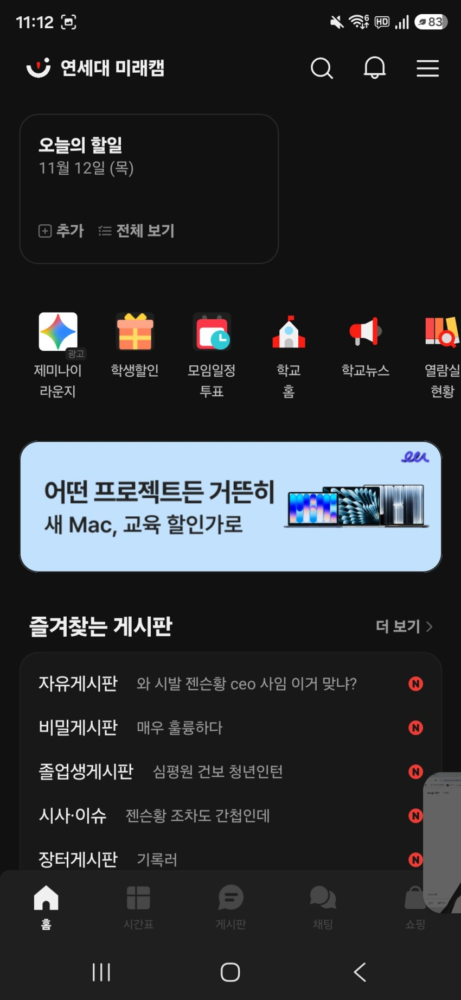
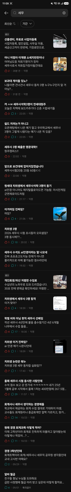
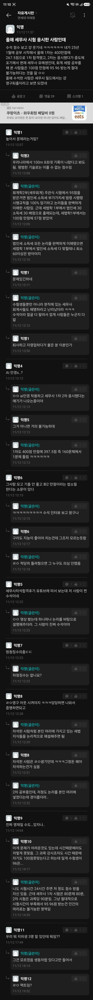
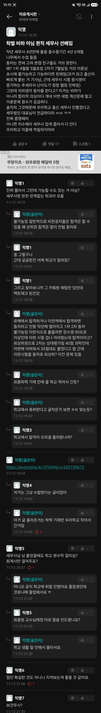

자게에서 긁어온 치위생 세무사 떡밥 글 전체 목록하고
자유게시판 글 중에서 가장 핫한 글 두개 갖고옴
혹시 념글 하나 괜찮겠습니까?




자게에서 긁어온 치위생 세무사 떡밥 글 전체 목록하고
자유게시판 글 중에서 가장 핫한 글 두개 갖고옴
혹시 념글 하나 괜찮겠습니까?
댓글
수집 당시 댓글 94개
세뽕이1 · 11.12 23:25:13
ㅇㅇ · 11.12 23:25:19
ㅇㅇ · 11.12 23:25:46
· ㅇㅇ · 11.12 23:26:08
· ㅇㅇ · 11.12 23:26:30
· 세뽕이2 · 11.12 23:27:51
· ㅇㅇ · 11.12 23:29:34
· 세뽕이4 · 11.12 23:40:19
· ㅇㅇ · 11.13 02:50:03
· ㅇㅇ · 11.13 10:23:16
· ㅇㅇ · 11.13 10:32:58
· ㅇㅇ · 11.13 10:33:54
· ㅇㅇ · 11.13 10:57:54
· ㅇㅇ · 11.13 14:22:00
ㅇㅇ · 11.12 23:25:57
ㅇㅇ · 11.12 23:26:46
ㅇㅇ · 11.12 23:27:00
ㅇㅇ · 11.12 23:28:06
세뽕이5 · 11.12 23:47:27
세뽕이6 · 11.12 23:48:53
세뽕이7 · 11.13 00:17:33
· ㅇㅇ · 11.13 16:48:08
세뽕이8 · 11.13 05:09:33
ㅇㅇ · 11.13 10:17:55
· ㅇㅇ · 11.13 10:18:17
원또 · 11.13 10:18:15
푸른반복 · 11.13 10:18:46
· 푸른반복 · 11.13 10:19:17
· 푸른반복 · 11.13 10:22:53
· ㅇㅇ · 11.13 10:23:20
· ㅇㅇ · 11.13 10:23:27
· ㅇㅇ · 11.13 10:23:50
· 숫냥이 · 11.13 10:24:22
· ㅇㅇ · 11.13 10:24:42
· ㅇㅇ · 11.13 10:26:57
· 푸른반복 · 11.13 10:27:20
· ㅇㅇ · 11.13 10:29:04
· ㅇㅇ · 11.13 10:34:37
· 숫냥이 · 11.13 10:54:42
· 푸른반복 · 11.13 11:06:11
· ㅇㅇ · 11.13 11:40:35
· ㅇㅇ · 11.13 12:08:43
· 숫냥이 · 11.13 12:12:58
· ㅇㅇㅅ · 11.13 12:13:51
· 푸른반복 · 11.13 12:14:13
· 푸른반복 · 11.13 12:14:48
· 숫냥이 · 11.13 12:26:27
· 푸른반복 · 11.13 12:27:21
· 숫냥이 · 11.13 12:58:16
· ㅇㅇ · 11.13 14:23:20
· ㅇㅇ · 11.13 16:47:31
ㅇㅇ · 11.13 10:22:18
ㅇㅇ · 11.13 10:23:45
ㅇㅇ · 11.13 10:23:51
ㅇㅇ · 11.13 10:24:08
피아견 · 11.13 10:26:37
ㅇㅇ · 11.13 10:26:47
ㅇㅇ · 11.13 10:30:30
· ㅇㅇ · 11.13 13:55:29
ㅇㅇ · 11.13 10:32:19
AI
ㅇㅇ · 11.13 10:33:41
· ㅇㅇ · 11.13 14:01:24
ㅇㅇ · 11.13 10:34:46
ㅇㅇ · 11.13 10:35:03
ㅇㅇ · 11.13 10:35:33
ㅇㅇ · 11.13 10:45:03
ㅇㅇ · 11.13 10:58:42
고등어춉 · 11.13 11:01:26
ㅇㅇ · 11.13 11:21:01
ㅇㅇ · 11.13 11:29:06
· ㅇㅇ · 11.13 13:25:30
ㅇㅇ · 11.13 11:35:10
· ㅇㅇ · 11.13 11:36:22
ㅇㅇ · 11.13 11:40:03
ㅇㅇ · 11.13 11:46:33
ㅇㅇ · 11.13 12:30:36
예아 안될거 뭐있노
미코멧토 · 11.13 13:16:48
· ㅇㅇ · 11.13 13:44:28
· ㅇㅇ · 11.13 13:53:21
· ㅇㅇ · 11.13 16:44:43
ㅇㅇ · 11.13 13:49:32
ㅇㅇ · 11.13 13:52:53
ㅇㅇ · 11.13 13:55:46
ㅇㅇ · 11.13 14:27:39
ㅇ · 11.13 14:46:48
ㅇㅇ · 11.13 14:54:51
ㅇㅇ · 11.13 15:09:24
· ㅇㅇ · 11.13 15:09:44
ㅇㅇ · 11.13 15:15:23
· ㅇㅇ · 11.13 15:17:36
ㅇㅇ · 11.13 15:53:48
ㅇㅇ · 11.13 16:27:50
백도어킹 · 11.13 17:32:32
ㅇㅇ · 11.13 19:18:16